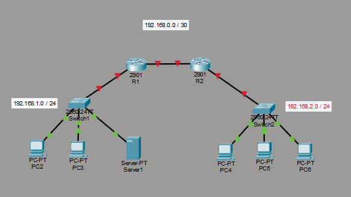

Identificar las redes. Si tenemos más de un router, miramos cuántos routers tenemos, ya que la red entre routers es una nueva. Tenemos el siguiente ejemplo:

La red entre routers solamente va a tener 2 dispositivos (en este caso), por tanto, es un /30, ya que solamente necesitamos 2 bits para 2 redes + IP de Red + Ip Broadcast (4 en total). En las otras subredes, dejaríamos /24 ya que es más probable que existan más dispositivos.